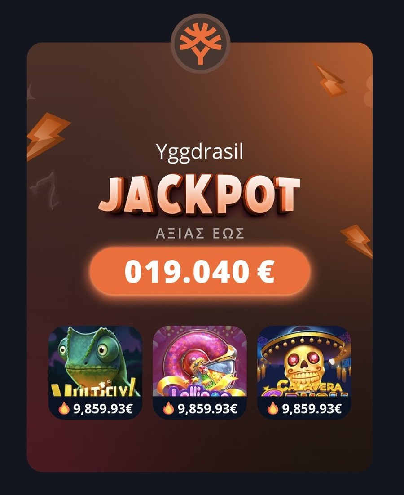
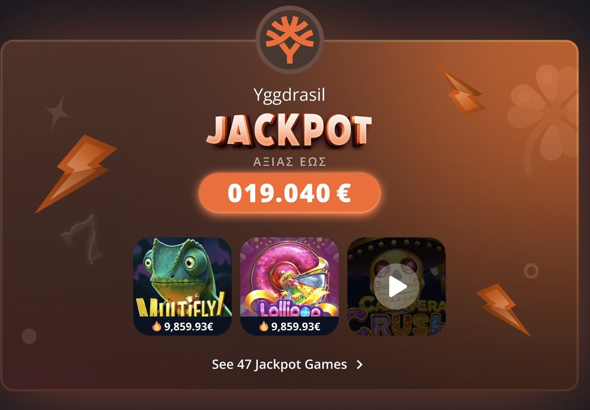
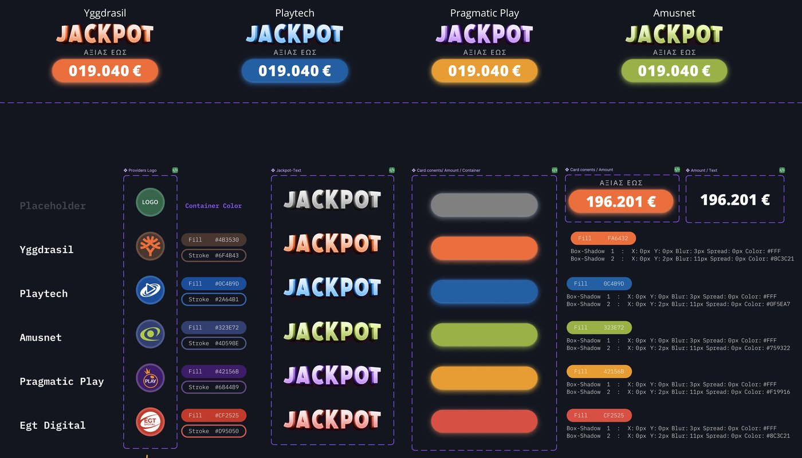

Jackpot Layout
A jackpot card for Novibet's casino lobby. Built to work for a dozen providers, stay readable in a dense grid, and settle a design debate with real users instead of opinions.
One number, a dozen feeds
Novibet's casino lobby runs jackpots from more than a dozen providers, Yggdrasil, Playtech, Pragmatic Play, Amusnet, EGT Digital, with more being added. Each one sends its own feed format, tier structure, and brand colors.
It's a high intent surface, people open it already looking for the biggest number on the page. My job was one card that works for every provider's feed, holds up in a dense grid, and never buries the number that matters.
The short version
One flat card assumed one flat number.
Several providers report tiered jackpots, not one. The old card had room for exactly one amount and no way to pin a provider to a fixed spot.
Two card states, tested before shipping.
Compact by default. Focused on hover or center scroll, revealing every tier. Validated against a competitor pattern with a moderated study first.
What's live today
What's shipping on Novibet right now. Compact by default, one card per provider.
Real production capture. Compact by default, one card per provider, each taking its turn to reveal its full tier breakdown.
A provider layout needs room for up to four tiered amounts, not one, the way Red Tiger already shows Mega, Super, Amazing and Casual pools. Content teams also need a way to pin a specific provider to a fixed spot, independent of pool size or how it would otherwise sort.
Testing the idea before shipping it
Two working prototypes made the debate concrete. One close to a competitor's pattern with Novibet's branding, one built around the compact and focused idea. A moderated evaluation settled it with real players.
Each session runs a 5 second first impression test, a timed task, then a side by side comparison once both prototypes have been seen. The prototypes are functionally identical, this is about which one communicates amount, game, and provider faster, with less confusion.
Find an Amusnet game with the biggest jackpot amount.
Logged per participant: time to locate the amount, the path taken, any hesitation, and their comments, followed by "what would you change to make this easier?"
How might we show every tier without losing the number people came for?
One number, not four. The card assumed a single jackpot amount. Several feeds report tiered pools, grand, major, minor, mini. Fitting four into a card built for one meant shrinking the headline figure or hiding the rest behind a tap nobody knew about.
Sort order, not priority. Providers always self sorted by pool size or game count. The business team sometimes needs a specific provider pinned to position one, a commercial deal, a launch push, and the layout had no attribute for that.
The fix: a compact default state, a focused state revealing the full tier breakdown on interaction, and an order attribute that overrides sorting only when someone sets it.
Compact by default, focused in turn
The mechanics that carry the card from a dense grid to a full tier breakdown, reused across a growing list of providers.
Compact grid
Provider identity, one headline pool, three key games. Dense enough to sit next to five or six siblings without competing for attention. This is what's live today, shown in Preview above.
Auto rotation, desktop
Cards take their turn automatically, left to right, one expanded at a time for 5 seconds before handing off to the next. The cycle restarts after a full pass and loops indefinitely.
Hovering pauses the sequence and holds that card open for as long as the pointer stays there. Moving away resumes left to right from that card. Chevrons for manual paging only appear while hovering the row.
Center focus, mobile
No separate default and expanded state here, the centered card already shows everything: provider, amount, and games. Neighbors peek partially on each side. Swipe to move between them, looping infinitely in either direction.
Configuration, not one off screens
The card is one component. What makes it hold up across a dozen providers is the layer around it.
Grouped by provider
The same card, arranged as a provider rail, a category holding ordered sub layouts instead of a flat list.
Order attribute
Pins a provider to a fixed slot, overriding pool size or game count sorting only when someone sets it.
Sort by
Content teams choose provider name, pool size, or game count as the default sort. No design ticket per change.
Feeder agnostic
Reads a single total or a leveled, tiered feed without a template change on either end.
Anatomy and provider system
Every provider gets its own container color, wordmark treatment, and background glow, defined once and reused everywhere the card appears. Default and focus states share the same anatomy, focus just reveals more of it.

Smaller logo, glow off, the games row and link stay hidden until needed.

Card widens, logo grows, glow turns on, and the games row with its link appears.

Each provider gets a fixed fill, stroke, and glow, defined once and reused everywhere the card appears. A neutral placeholder covers anything without a treatment yet.
Each amount spins into place digit by digit, like a slot reel settling, once when the row scrolls into view and again whenever a new card takes its turn.
Both directions shipped
Neither prototype lost
Both directions from the study were approved for use, not a single winner and a discard.
Reused for Providers
The other direction was carried over shortly after into the Providers layout, the grouped rail next to it.
One config, two surfaces
The order attribute and sort by model shipped once and neither surface had to relitigate it.
What I would tighten next time
Time the rotation to the content, not the demo.
Three games plus four tiers is a lot for a five second window. Pacing is still being tuned against how long people actually look.
Document shared config before the second surface needs it.
Running two accepted directions in parallel meant the order attribute and sort by model needed clear documentation up front. It lagged the second rollout by a few weeks.
Decide the mobile pattern up front, not as a follow up.
The center focus carousel is a real answer, not a compromise, but it was settled after the desktop pattern instead of alongside it.